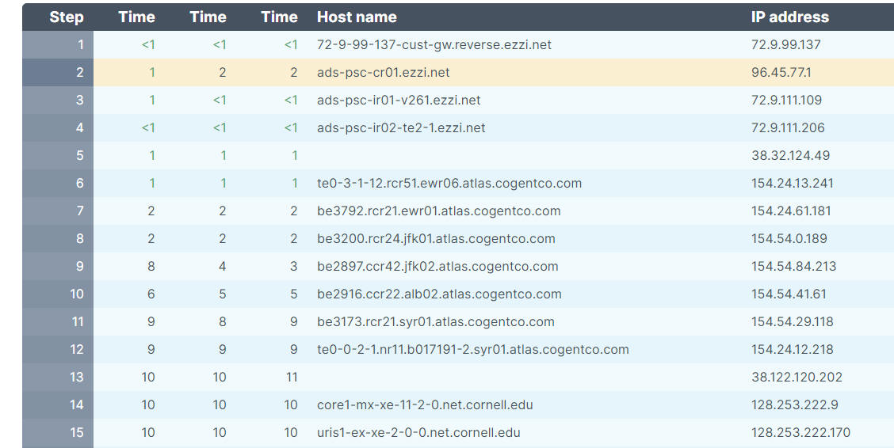

Team gl12 Xiaoyu Li(xl793) Xinyun Guo(xg284)
1.a. Our business is aiming to solve the nutrition and food preparation problem for fitness people. Customers can use our online website to get meal advice from a nutritionist and then order the ingredients for those meals all in one place. This is a different service than other delivery services. For the ingredients, we will coordinate with some supermarkets and directly deliver the ingredients from the supermarkets to the customer.
1.b. Our business will use the recurring revenue stream.
It involves the customers to continue making payments towards their products and
services through our business. Our customers will use our nutritionists’ advice
and purchase their food week to week. These are not one-time payments. There are
also fees involving delivery and possibly subscriptions. Subscription fees are
used when customers continue to use our business and eventually could get a
discount after using it for an extended amount of time.
2.a. Our competitors are any online food delivery services such as
Wegmans.Wegmans is a great supermarket that offers many fresh fruits,
vegetables, meat, and other products. They also offer many organic foods. Except
for in-store options, they also offer delivery service. Our competitive
advantages are that we offer nutritionists advice and food delivery services at
the same time. Customers, especially fitness people can get advice from our
nutritionists and purchase food using the same website.
2.c.
3.a.contact via our emails: xg284@cornell.edu xl793@cornell.edu
3.b.
4.a.Trace Route to test

Figure 1 trace route test
5.a.x Explain: There may be a delay in productivity. The reasons for the delay may include learning to use technology, adapting the technology to your business and adapting the organization to IT. Evidence of the delay includes the increase in productivity 1990-1998 after the desktop computing revolution.
5.b.y Explain: Average productivity does not
reflect the productivity change in a specific business, as gains and losses
cancel out. IT is bringing great competitive advantages to some, but destroying
others. National averages do not tell you the whole story when the population is
diverse.
5.c.z Explain: The value of the product is low initially with new products
because you have few customers. Once you reach a critical mass of customers, the
value explodes. Until you reach a critical mass of customers, adoption is
delayed. Network effects lead to delays in adoption.
6.a.y Explain: Online education has built-in
interaction with automated questions and answers, and it has asynchronous
discussion groups using discussion boards. Asynchronous is accessible anytime
anytime at very low cost. Online education is generally considered to be lower
quality since it has little personal interaction. It has wider access since
students can attend lectures remotely and they do not need to move on campus.
6.b.w Explain: Low-quality products are often ignored by the dominant firms as
unprofitable and inappropriate for their brand image, so the newcomers can use
them as an entry strategy, avoid a competitive reaction, and expand market share
slowly as the technology improves, and disrupt the whole industry.
6.c.z Explain: Once you have the shared component in place, expanding into new
areas is relatively cheap, but the returns are high. For example, databases have
shared components among many technologies.
6.d Explain: There may be some disruptive technologies in our business. To
counter the threat, we would use a constant change strategy. For example, there
may be some substitutability among the technologies, and we can expand into
substitute technologies. In addition, if we find another business has synergies
with our business, we can learn their strategies and expand to new areas.
7.a.y Explain: (Positive) Network Effects is typically networking and
communication technologies. A product has (positive) network effects if the
value of a product to a user increases with the total number of users.
7.b.w Explain: When the product was first created, no one knows it and moving
from 0 to non-zero is a big psychological hurdle. Bundling with an established
product can introduce the product to more customers and help them find the value
of the product.
7.c.z Explain: eBay has many sellers selling a diverse mix of products on the site, which attracts a lot of buyers, resulting in an increase in demand and prices. The increase in demand and prices attracts more sellers to the marketplace. And when more sellers join the platform, supply increases and prices decrease, which attracts more buyers to the marketplace. The platforms like eBay have an indirect or two-sided network effect that more buyers attract more sellers, and more sellers at eBay increase the value of eBay to each buyer.
8.a.z Explain: At its most basic, mesh networking is a way for users to connect directly to other peers in a given area, creating a “mesh” of network access points, repeating and bolstering the signal away from a central starting point. Most mesh networks democratize the connection, allowing anyone who is connected to access anything they’d like to.
8.b.w Explain: Customers can purchase without direct human scanning. The RFID chips can detect everything you put in your cart, show a tab on the screen and you can check out by swiping the card at the screen. In this way, retail stores do not need to hire so many cashiers.
8.c.x Explain: The store is outfitted with cameras and shelf sensors to help Amazon’s computer vision system work some magic. The technologies, in turn, connect the customer and the phone the customer scanned at the entrance with the items the customer took from shelves and carried out the door.
9.a.z Explain: Virtual corporation is a collection of loosely coupled businesses that can act as a single firm by rapidly banding and disbanding. Since it is a collection of businesses, so answer z defines it best.
9.b.y Explain: Virtual corporation has advantages such as operational efficiency of specialization, and rapid response to opportunities and problems. However, it also has disadvantages like a higher coordination cost and loss of control.
9.c.y Explain: According to the reading, e-business does not include commercial transactions involving an exchange of value across organizational boundaries. E-commerce is not anything digital that a firm does. E-business refers to the digital enabling of transactions and processes within a firm.
9.d. Yes, we can convert our business to a virtual corporation. Our business involves online advice services from nutritionists and delivery services from supermarkets. These two services can be achieved by a virtual corporation that links nutritionist sources to give advice regarding ingredients and supermarkets able to offer those ingredients and the delivery. The virtual corporation may be more efficient to provide customers with the ingredients they need.
10.a.x Explain: Space X needs about 400 satellites and each compact Starlink satellite weighs 573lb and features a solar array for power.
10.b.z Explain: From the article, we can know that “ALEKS’ machine-learning algorithms are analyzing their responses to figure out which concepts they understand and which they don’t”. Thus, intelligent books are customized to each student by observing student responses and using machine learning.
10.c.z Explain: From the article, we can know that “in the U.S., the credit and debit card system is well-established and works just fine for most people.” Therefore, the mobile payment did not provide big advantages over this system, people are still willing to stay their preference with credit/debit card.
11.a. Creating an asynchroous private discussion board for your users.
11.b.To create a synchronous embedded chat box, where all visitors of the page can chat with each.
HTML5 Chatroom powered by Minnit Chat
12.a. Once I get remote access of my teammate's laptop, I can see the desktop of her shared computer. While it is being accessed by my computer, my teammates can also see the actions simultaneously on her laptop. Yes, she can tell that her laptop has been remotely accessed.
.png)
Figure 2 remote control
12.b. It is easy to use synchronous document sharing that only people invited can access the document, and it is conveinient and efficient that people can view and edit the file together. We can see multiple mouse pointers on the shared document and are all active simultaneously. We don't need to take turns but rather edit the file at the same time.
.png)
Figure 3 document sharing with google doc
.png)
Figure 4 video conference using google hangout